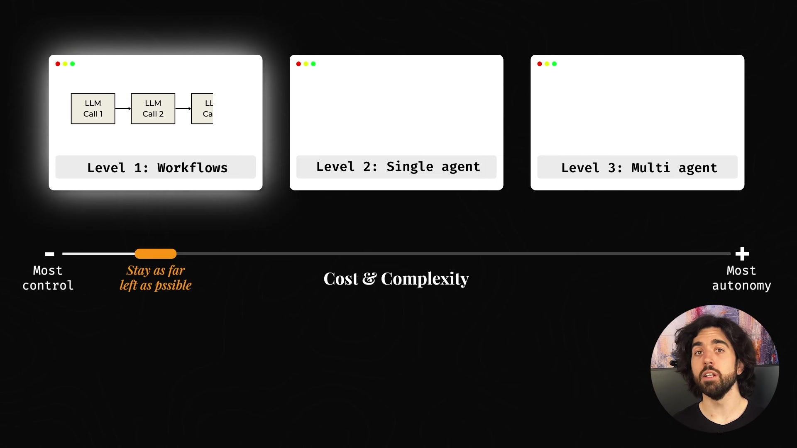
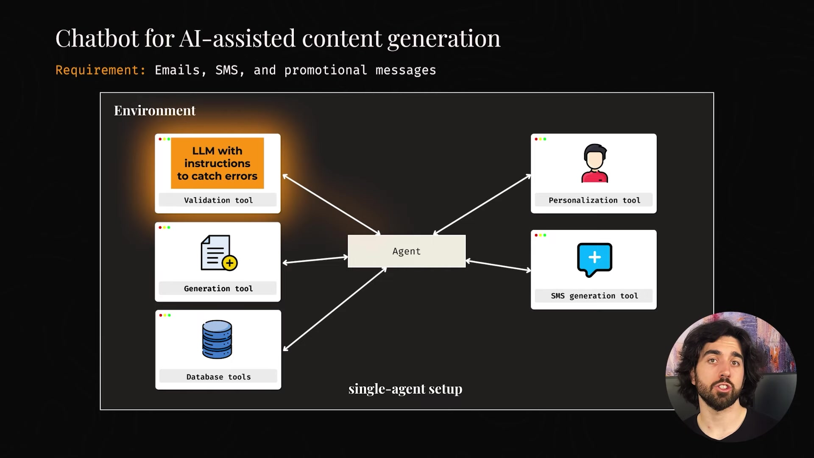
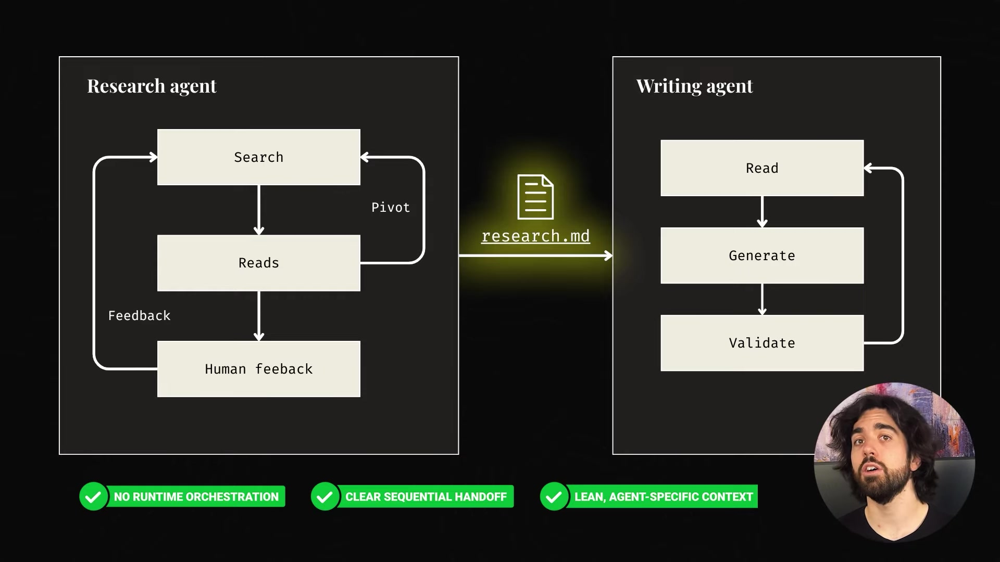

CHAPTER 01先区分谁在决定下一步
架构选择从控制权开始：步骤稳定时使用工作流，路径需要探索时加入 Agent，出现真实拆分需求后再考虑多 Agent。
调用了 LLM，不等于整个系统就是 Agent
工作流由开发者决定步骤与顺序，即使其中多个节点调用 LLM，流程本身仍然可以固定。Agent 则围绕目标，根据执行中的发现选择下一步。如果正确顺序能像菜谱一样预先写清楚，模型通常不必再为这个顺序做规划。
工具是一项能力，可以是计算器、数据库查询、网页浏览、校验器、API，甚至另一个 LLM。Agent 是选择何时使用什么能力的决策者。因此，一个模型调用十个 API，仍可能只是一个带十个工具的 Agent。区分的依据是决策职责，不能只数 API 或模型调用次数。
| 方案 | 谁安排步骤 | 付出的额外代价 |
|---|---|---|
| 工作流 | 代码预先规定顺序或分支 | 主要维护各步骤与接口 |
| 单个 Agent＋工具 | 一个模型决策中心动态选择 | 增加规划调用与不确定性 |
| 多 Agent | 多个决策中心需要协调 | 增加交接、上下文同步与故障定位 |
讲者把这三者画成从控制到自治的连续谱，建议在能可靠解决当前问题的前提下尽量停留在左侧。向右移动通常意味着更多 token、延迟、追踪记录与可能出错的位置；复杂度应对应一个已遇到的约束。

CHAPTER 02已知顺序用工作流，需要探索先用一个 Agent
客服工单：判断可以智能，顺序仍然固定
工单进入系统后，先分类、路由到团队、生成回复，再检查政策合规并发送。分类和起草可以调用模型，但无需让模型每次重新判断究竟先分类还是先路由。稳定流程更容易做单步测试、追踪执行与定位故障，也减少用 token 反复规划固定顺序的成本。
当路径依赖新发现时，Agent 才开始有优势：API 失败后选择替代方案；材料不全时请求澄清；读取结果后决定继续检索。讲者建议先从单个 Agent 开始，尤其适合紧密耦合、主要串行、共享全局上下文的任务，或者预算和延迟要求较严格的场景。
营销内容生成：专业能力可以放在工具里
客户最初计划搭建协调器、请求分析、多个内容生成器、结构生成、语义校验和语法校验等一整组 Agent。实际任务却通常只是为指定客户，生成邮件、短信或促销内容：计划、生成、校验，有问题再修正。步骤相互依赖、总体流程相似，也没有很强的并行需求。
把每个动作拆成独立决策者，可能造成局部上下文与交接错误。团队于是保留一个决策中心，把专业性放到工具里：校验工具可使用自己的 LLM 和提示词；个性化工具提供合法字段引用；短信工具把字数上限与垃圾词检测写成明确约束。
关键机制：工具内部可以有专用模型，而全局上下文与最终选择仍由一个 Agent 负责。业务专业化与顶层多 Agent，是两个不同维度。讲者报告这种方案更快、更便宜、更容易调试，但没有给出量化对照。

CHAPTER 03什么时候拆分有实际价值
先定位上下文和工具选择的瓶颈
工具名称、描述和 schema 都占用输入空间，此外还有系统指令、示例、检索材料和历史。工具过多时，模型在拥挤的输入中选择动作会更困难。讲者给出约十到二十个工具的单 Agent 经验区间，并以拆分工具集合来减少每次调用负担。
这个数量是视频中的经验性建议，没有附带模型、任务或测评曲线，不能当作所有 Agent 的硬性上限。视频也没有系统比较其他工具发现或上下文管理方案，因此不能把“拆成多 Agent”视为被证明的唯一解决办法。
| 拆分动机 | 需要解决的具体约束 |
|---|---|
| 真正的并行 | 任务相对独立，同时执行能缩短关键路径 |
| 上下文隔离 | 不同任务所需指令、工具与材料差异大，混放已影响表现 |
| 模块与外部集成 | 接入第三方 Agent，或分布在本地与客户系统 |
| 硬隔离要求 | 安全、数据或合规边界要求在不同系统内运行 |
这些收益需要与协调成本、额外 token、延迟和交接失败共同评估。把一个原本简单串行的任务拆成多个角色，通常不会凭空创造并行价值。视频的判断依据是具体工作负载，并未提供对所有架构的普遍性能排名。
CHAPTER 04研究与写作：用明确产物连接不同上下文
两个阶段，确实需要不同的工作条件
技术文章生成最初由单个 Agent 同时研究和写作。研究需要探索性检索、读取、改变方向，并使用网页、YouTube、GitHub 和文档工具；写作则需要稳定风格、格式规则和逐节校验。两类要求同时放入一个上下文，会携带许多当前阶段用不到的工具和指令。
团队最后拆成研究 Agent 与写作 Agent。前者搜索、阅读、接受人的方向反馈，形成研究文档；后者读取这份产物，生成文章，再根据标准反复校验。屏幕用 research.md 表达两者之间的交接契约。这里没有复杂的实时互相调用，而是一个清楚的顺序交接。

需要动态协调时，保留一个全局汇总点
对于更复杂的多 Agent 系统，讲者倾向协调器—工作者结构：一个协调器持有主要上下文，委派具体任务，并综合结果，避免每个 Agent 各自掌握部分事实、又无人负责整体判断。研究—写作的固定交接例子，则说明多 Agent 也不必总采用复杂动态编排。
全片的选择方法可以归纳为：先问顺序是否稳定，再问一个决策中心能否处理所需上下文与工具，最后才考虑并行、隔离和外部集成是否要求多个 Agent。结尾提供免费的架构速查表并邀请观众讨论项目，没有补充新的系统评测。
应用时应验证的结果包括完成质量、耗时、token 成本和故障定位难度。本文没有把营销案例的经验增益推广成所有单 Agent 都优于多 Agent。
来源：Stop Overengineering: Workflows vs AI Agents Explained。
文中能力、产品状态、数字及案例均按录制时的说法呈现；论证限制在对应内容处说明。时间轴笔记为第三人称归纳，便于回看定位。